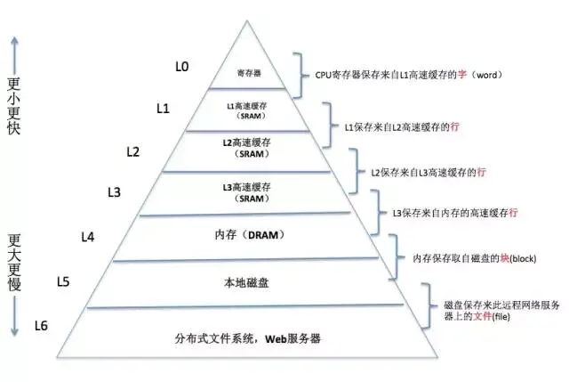
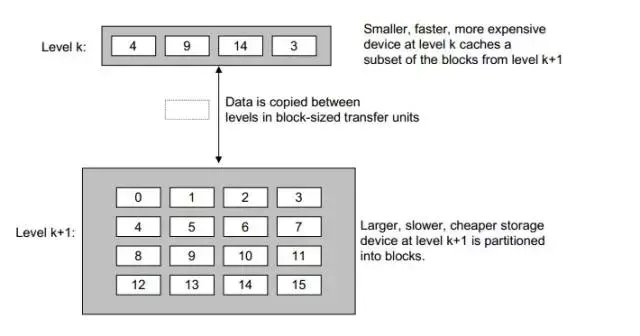

局部性原理 #
一个优秀的程序、优美的代码，往往具有良好的局部性。
1 什么是局部性原理 #
1.1 原理 #
- 程序局部性原理是指程序在执行时呈现出局部规律，即在一段时间内，整个程序的执行仅限于程序中的某一部分；相应的，执行所访问的存储空间也局限于某个内存区域。
- 局部性通常由两种形式，分别是时间局部性和空间局部性：
- 时间局部性： 被引用过一次的存储器位置在未来会被多次引用（通常在循环中）。
- 空间局部性： 如果一个存储器的位置被引用，那么他附近的位置也会被引用。
- 局部性可以提高程序的运行效率。
1.2 示例 #
//求数组元素之和，v为数组名，n为数组大小，
int sum(int *v, int n)
{
int i = 0;
int sum = 0;
for (i=0; i<n; ++i)
{
sum+=v[i];
}
return sum;
}

- 数组在内存中是按照上图的方式连续存放的。
- 对于
sum变量：- 具有良好的时间局部性，因为在
for循环结束之前，每次执行循环体都有对sum的访问， - 没有空间局部性，因为
sum是标量，通过sum这个地址只能得到一个值。
- 具有良好的时间局部性，因为在
- 对于
v变量：- 具有良好的空间局部性，因为数组
v是按照顺序存放在内存中，每次访问v[i]总是在v[i-1]的下一个位置。 - 没有时间局部性，因为在循环体中，每个元素
v[i]只会被访问一次。
- 具有良好的空间局部性，因为数组
2 为什么局部性可以提高程序的运行效率 #
2.1 计算机存储结构 #

- 在计算机系统中，存储设备都被组织成了一个存储器层次结构，如上图所示。
- 越往上，存储器的容量越小、成本越高、速度越快。
最开始的时候，计算机存储器层次只有三层，分别是CPU 寄存器、DRAM 主存以及磁盘存储，那么为什么后来弄得这么复杂了呢？
- 这是因为CPU 和主存之间存在着巨大速度差异，作为核心的CPU 处理数据的速度极快，内存跟不上。
- 因此，系统设计者被迫在CPU 寄存器和主存之间插了一个小的 SRAM 高速缓存存储器，称为L1 缓存，大约可以在 2-4 个时钟周期内访问。
- 后来发现L1 高速缓存和主存之间还是有较大差距，又在L1 高速缓存和主存之间插入了速度稍微慢点的 L2 缓存，大约可以在 10 个时钟周期内访问。
- 于是，再这样的模式下不断演变，最终形成了现在的存储体系。
2.2 缓存 #
2.2.1 什么是缓存 #
2.2.1.1 原理 #
- 存储器层次结构的主要思想是上一层的存储器作为低一层存储器的高速缓存，因此寄存器 L0 就是 L1 的高速缓存，L1 是 L2 的高速缓存，L2 是 L3 的高速缓存，L3 是主存的高速缓存，而主存又是磁盘的高速缓存。
- 也就是说，对于每个 k，位于 k 层的更快更小的存储器设备作为第 k+1 层的更大更慢存储设备的缓存，也就是说，k 层存储了 k+1 层中经常被访问的数据。
- 在缓存之间，数据是以块为单位传输的，不同层次的缓存，块的大小会不同，一般来说越往上，块越小。
2.2.1.2 示例 #

- 如上图所示，k 是 k+1 的缓存，k 中缓存了 k+1 中块编号为 4、9、14、3 的数据。
- 他们之间的数据传输是以块为单位的，当程序需要这些块中的数据时，可直接从缓存 k 中得到，这比从 k+1 层读数据要快。
2.2.3 缓存命中和缓存失效 #
- 缓存命中（Cache Hit）：
- 当程序需要第 k+1 层中的某个数据时，会首先在他的缓存 k 层中寻找，如果数据刚好在 k 层中时，就称为缓存命中。
- 如在上图中，若程序访问 k+1 层的 4，则先去其缓存层 k 去找，4 恰好在 k 层，因此发生了缓存命中。
- 缓存失效（Cache Invalidation）：
- 缓存失效也称为缓存不命中，当需要的数据对象不在缓存中时，称为缓存不命中。
- 当发生缓存不命中时，CPU 会直接从 k+1 层取出包含数据对象的那个块，然后需要将其再缓存到 k 层，以便下次再访问时就能直接从缓存层 k 中取到。
- 对缓存失效的数据被内存获取后再存入到 k 层的缓存中时，如果此时k 层的缓存已经放满的话，就会置换其中一个块，至于置换哪一个块，这是由缓存中的置换策略决定的，具体可参考 2.3.3 页面置换算法。
2.2.4 程序局部性如何影响程序性能 #
2.2.4.1 原理 #
- 利用时间局部性： 由于时间局部性，同一个数据对象会多次被使用，一旦一个数据对象从 k+1 层进入到 k 层的缓存中，就希望他多次被引用，这样能节省很多访问造成的时间开支。
- 利用空间局部性： 假设缓存 k 能存 n 个数据块，在对数组访问的时候，由于数组是连续存放的，对第一个元素访问的时候，会把第一个元素后面的一共 n 个元素（缓存以块为单位传输）拷贝到缓存 k 中，这样在对第二个元素到第 n 个元素的访问时就可以直接从缓存里获取，从而提高性能。
2.2.4.2 示例 #

- 为了阐述方便，作出如下假设：
- 缓存每次只能缓存一块，一块大小只能放 3 个 int 类型数据。
- 数组
a为一个两行三列的数组，即a = int[2][3]。
- 下面我们看一下按行访问和按列访问分别会发生什么：
- 按行访问：
- 开始时访问第一行，首先访问
a[0][0]，直接从内存读取，然后将a[0][0]及其后面的两个元素a[0][1]、a[0][2]缓存到缓存中。 - 接着访问第一行的其他元素
a[0][1]和a[0][2]，由于这两个元素已经在缓存中存在了，所以直接从缓存中读取即可。 - 第二行的访问方式和第一行的访问方式一样。
- 因此，对于整个数组 6 个元素的访问，访问了 2 次内存，缓存命中了 4 次。
- 开始时访问第一行，首先访问
- 按列访问：
- 开始时访问第一列，首先访问
a[0][0]，直接从内存读取，然后将a[0][0]及其后面的两个元素a[0][1]、a[0][2]缓存到缓存中。 - 接着访问第一列的第二个元素
a[1][0]，由于其没有在缓存中，所以也需要从内存中读取，然后将a[1][0]及其后面的两个元素a[1][1]、a[1][2]缓存到缓存中。 - 第一列的第三个元素和其他两个元素的访问方式一样，第二列和第一列的访问方式一样。
- 因此，对于整个数组 6 个元素的访问，访问了 6 次内存，缓存命中了 0 次，效率自然比按行访问低了。
- 开始时访问第一列，首先访问
- 按行访问：